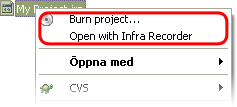

- Pour accéder aux options de InfraRecorder, utilisez le menu:
- Options
 Configuration...
Configuration...
Paramètres généraux
L'option Vérifier si "autorun" est actif à chaque démarrage va interdire l'autorun lorsqu'un CD est inséré dans le lecteur/graveur, et que InfraRecorder est lancé. Il est recommandé que l'autorun soit inactif, sans quoi, Windows peut lancer des applications qui sont sur le CD alors qu'une gravure est lancé. Ceci peut endommager le CD.
L'option Afficher l'écran de bienvenue au démarrage affiche l'écran qui vous permet de sélectionner le projet que vous souhaitez créer. Si cette option est invalide, le projet Cd de données sera sélectionné par défaut.
Les options Associer InfraRecorder aux fichiers .irp, et Associer InfraRecorder avec les images disque si elles sont validées, lancerons automatiquement InfraRecorder avec ces fichiers lorsque vous double-cliquerez sur ce type de fichiers dans l'explorateur Windows.
Si vous voulez que InfraRecorder se rappelle du dernier répertoire utilisé dans la vue explorateur, vous pouvez cocher Se souvenir du dernier dossier actif. Sinon, vous pouvez spécifier un dossier par défaut utilisé à chaque démarrage de InfraRecorder.
L'option Dossier Temporaire vous permet de spécifier l'emplacement du dossier où seront stocker tout les fichiers temporaires de l'application sur votre disque dur comme les images disque par exemple. Si votre disque dur ou votre partition sur laquelle vous stockez ces fichiers temporaires est presque pleine, cela peut être une bonne idée d'utiliser un autre disque dur pour ce fichier temporaire.
Paramètres avancés
Si vous souhaitez activer la fonctionnalité de journalisation (log), cochez l'option Activer le log. Ceci peut s'avérer utile si vous souhaitez pister un bogue ou une erreur dans InfraRecorder. Il n'est cependant pas souhaitable de laisser le log actif si vous ne souhaitez pas pister d'événement spécial, car le log nécessite plus de mémoire et de temps CPU.
L'option Activer l'effet de fumée valide ou invalide l'affichage d'une colonne de fumée durant la gravure. L'effet de fumée nécessite l'activation de l'effet Aero dans Windows Vista soit activé. Si Aero n'est pas activé, cette option n'aura aucun effet.
L'option Taille du tampon FIFO permet de chnager la quantité de mémoire RAM utilisée pour le tampon en plus de de la taille du buffer physique du graveur. Augmenter la taille du tampon peu permettre d'avoir une gravure plus stable. En règle générale, la taille du FIFO ne doit pas être inférieure à la taille physique du tampon du graveur, et ne doit pas être supérieure à la moitié de la RAM installée sur votre PC. Si vous faites souvent des gravures à la volée, vous devez paramètrer une taille importante de tampon FIFO (par exemple 128MiB) pour éviter toute rupture (underrun) des données lors de la gravure.
Paramètre de langue
Une liste des langues disponible est affichée dans la boîte de sélection. Pour changer la langue, sélectionnez simplement la langue que vous souhaitez, cliquez sur le bouton OK, et redémarrez InfraRecorder. Si la langue que vous souhaitez n'est pas disponible, vérifiez sur le site InfraRecorder si votre langue existe.
Extension
- L'extension shell (lorsque elle est activée) ajoute une commande supplémentaire au menu contextuel de l'explorateur Windows :
- 
Cela rajoute l'option de graver une image dique, ou un projet InfraRecorder juste en faisant un clic droit sur le fichier au sein de l'explorateur.
L'extension shell peut être personnalisée pour ajouter les commandes dans un sous-menu. Pour cela, validez l'option Afficher les menus contextuels dans des sous-menus.
On peut aussi personnaliser l'extension shell pour qu'elle n'affiche pas les icônes dans les commandes du menu en invalidant l'option Afficher les icônes dans les menus.
Associer l'Extension Shell
L'extension Shell n'est pas associé automatiquement avec les images disque, et les projet InfraRecorder. Lorsqu'on valide l'option Activer l'extension InfraRecorder, InfraRecorder Informe l'explorateur Windows que d'autres applications peuvent faire appel à ces fonctionnalités étendues.
Pour permettre à l'exlorateur Windows d'utiliser les fonctionnalités étendues fournies par l'extension shell d'InfraRecorder, l'extension shell doit être associée avec des types de fichier susceptibles d'utiliser ces fonctionnalités.
- Il existe un jeu prédéfini d'extensions de fichiers disponible dans la liste. Pour associer l'extension shell d'IInfraRecorder à un type de fichier, cochez le type de fichier disponible dans la liste. Vous pouvez rajouter n'importe quel autre type de fichier à la liste en cliquant sur le bouton Ajouter une nouvelle extension de fichier à la liste :